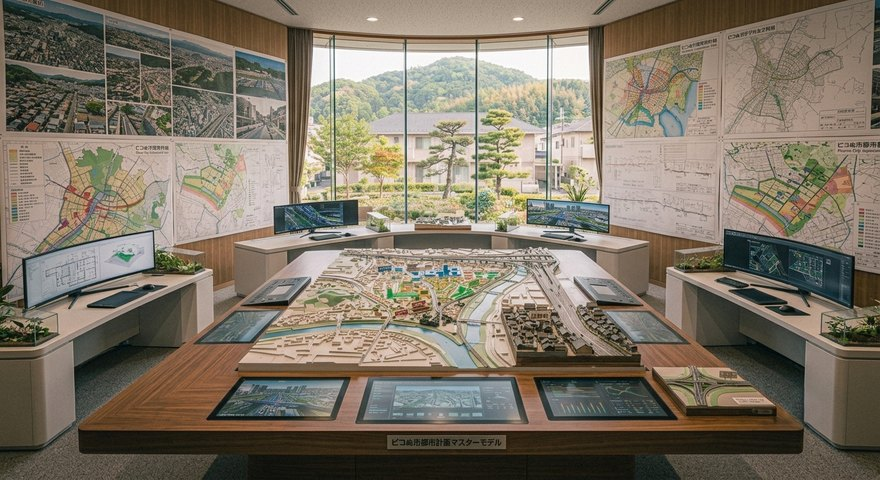

都市計画課では、ピコぬ市の土地利用や街づくりに関する計画、公共空間の整備、 地域環境の維持を担当しています。
大きな建物や目立つ施設だけではなく、路地の角、小さな空き地、古い建物の跡地など、街の中に残された「まだ役割の決まっていない場所」についても調査・検討を行っています。
ピコぬ市の都市計画
ピコぬ市では、効率だけを追求した街づくりではなく、過去の記録や地域の特徴を活かした計画を進めています。
古い商店街、記録町の街並み、ぬかピコ川沿いの環境など、現在ある風景を守りながら、 未来へつながる街づくりを目指しています。
主な業務
🏘️ 土地利用計画
住宅地、商業地、公共施設などのバランスを考え、暮らしやすい街の配置を計画します。
🚉 交通結節点の整備
鉄道連結技術を活かした駅周辺整備や、人の移動を支える空間づくりを行います。
🌿 緑地・空間管理
公園や緑地だけでなく、街の中に残る小さな自然空間を守ります。
📚 記録景観の保存
古い建物や地域の歴史的な風景を記録し、次世代へ残します。
都市計画課からのお知らせ
「余白管理制度」について
ピコぬ市では、建物が建っていない場所や、一見使われていない空間についても、街の大切な資源として記録しています。
現在の利用方法だけでなく、将来的な可能性を残すため、「余白」として管理する取り組みを行っています。